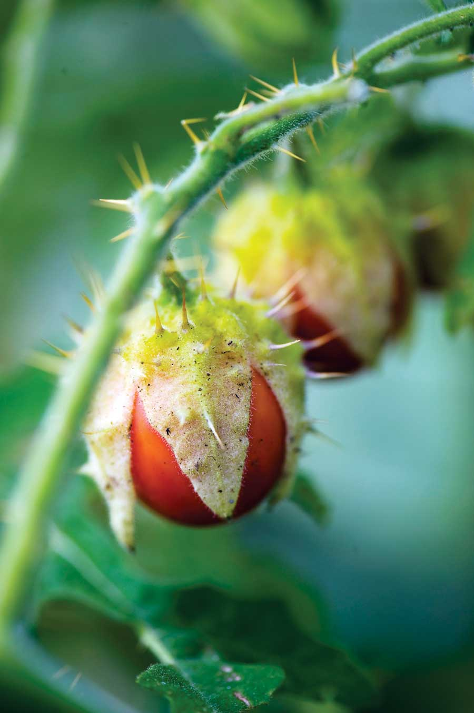
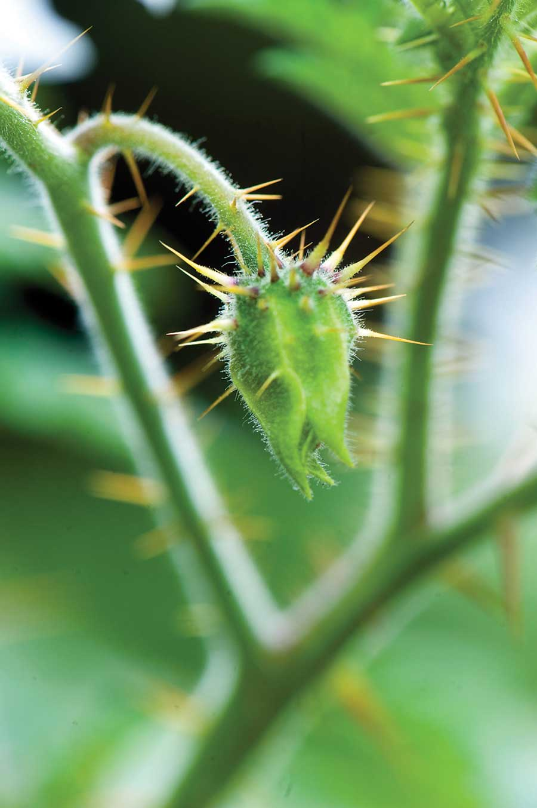
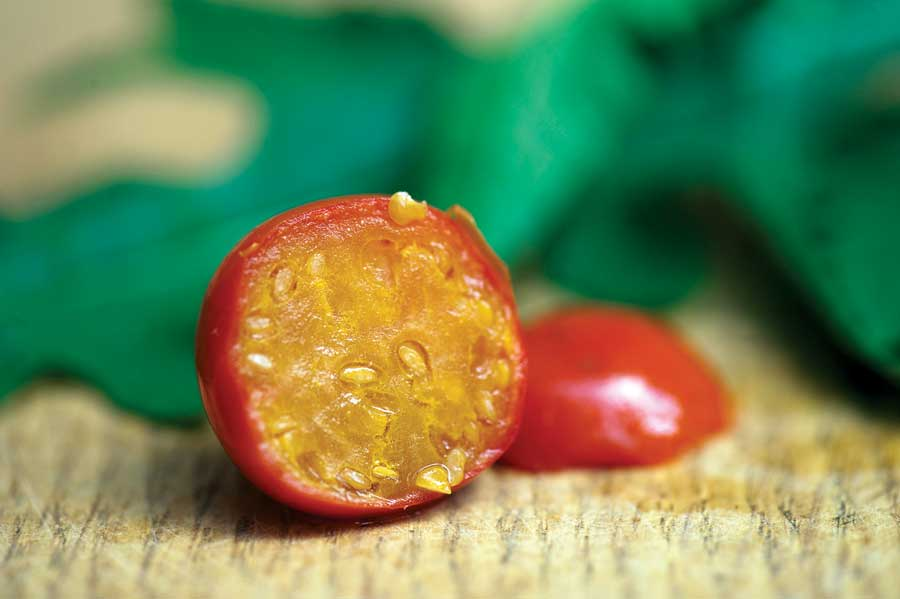
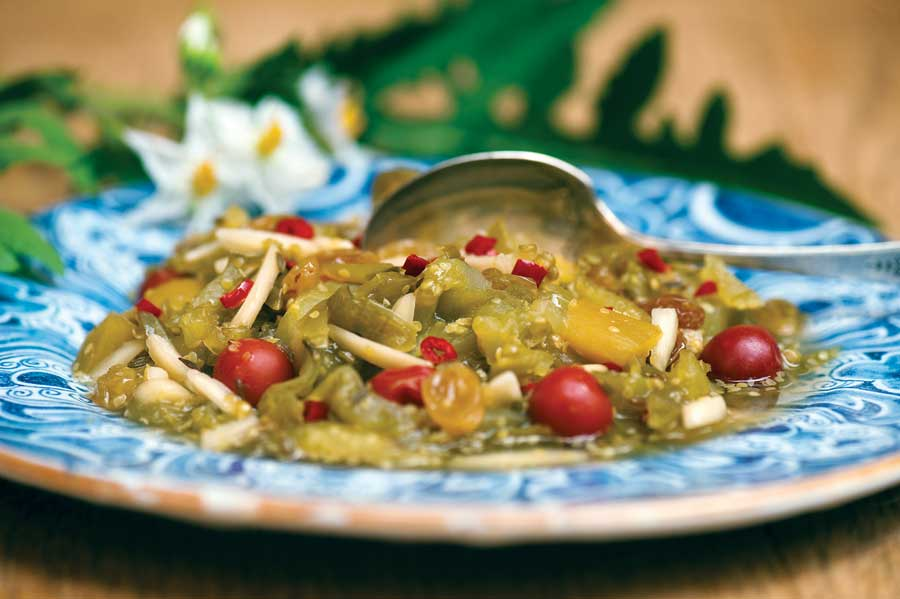
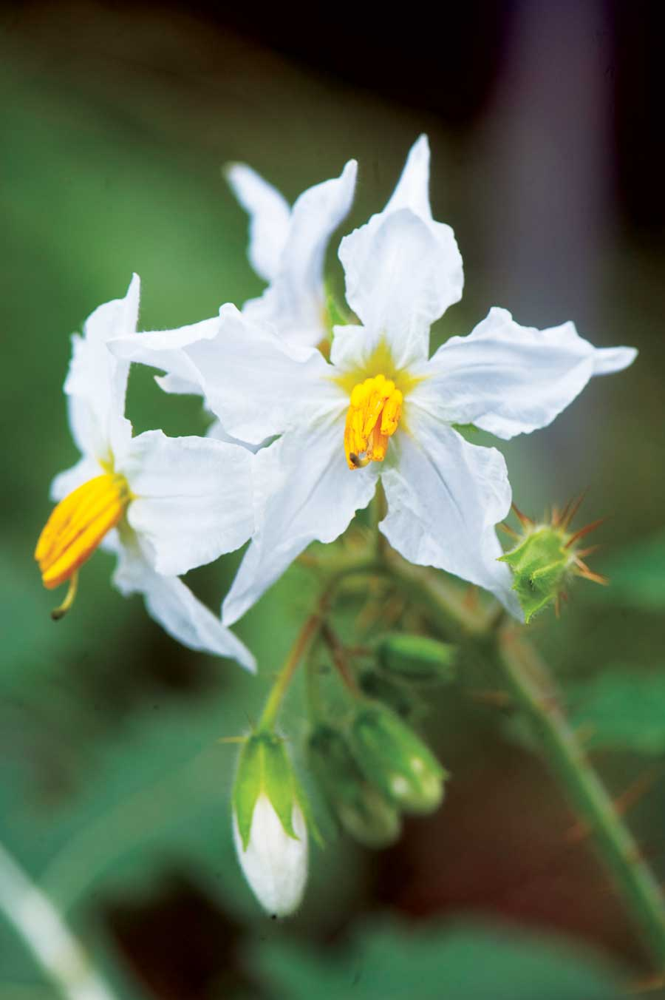

The Morelle de Balbis, or Litchi tomato, has been grown as an ornamental curiosity in American gardens since the 19th century, but only recently has it gained attention as a novel-tasting food. Its dark red cherry-size berries, with the distinctive flavor of sour cherries and a hint of tomato, can be used in a wide variety of culinary applications - from fruit tarts, preserves, jams and sauces, to sorbets and wine. Plus, it’s easy to grow and frost resistant.
The Litchi tomato comes to us from South America, where it has been an important part of indigenous cookery for hundreds of years. South Americans have developed a wide variety of local names for this plant, but it was the French botanist Michel Felix Dunal who first described the Litchi fruit scientifically, hence the common French name Morelle de Balbis (morelle is a French word for a nightshade plant; Balbis refers to the plant’s Spanish origin). Dunal gave it its first official name, Solanum balbisi, in 1813. Since then, the plant has been given a new botanical designation (S. sisymbriifolium), and has fascinated gardeners all over the world for its ornamental and culinary uses.
Because the plant itself is covered with thorns, it is sometimes used as a hedge plant to discourage animals from wandering into vegetable gardens - not a bad idea.
The fruits ripen dark red and are round and somewhat bullet-shaped, tapering to a blunt point. The interior flesh is yellow and full of tiny flat seeds that are arranged much the same way as seeds in a cherry tomato. Thus, when eaten out of hand, the raw fruit has the mouth feeling of raspberries. The actual flavor is tart and refreshing, quite similar to a sour cherry, for which it can be used as a relatively good substitute in pies.
Because the plant is in the nightshade family, and a close relative of both the tomato and potato, its fluffy white flowers resemble potato or eggplant flowers, though they are more profuse and striking. The fruit forms inside a husk like a tomatillo or ground-cherry; then, as the fruit ripens, the husk bursts open. The fruit is ripe enough to eat when it can be removed easily from the stem; if you have to pull hard, it’s not ready.
The fruit droops in clusters from stout 3- to 4-foot-tall plants (some grow as tall as 5 feet) that can be caged like tomatoes for better support. The indented leaves look vaguely like tomato leaves, although side by side the differences are easy to recognize. The plants are covered with small thorns, even on the underside of the leaves. Some gardeners mind the thorniness of the stems and fruit husks and thus wear gloves to harvest the fruit, yet just as many people are not bothered by them at all. Keep in mind that the thorns help to protect the plant and fruit from predators - even wily catbirds.
The leaves and stems of the plant are rich in solasodine, a substance that makes it extremely resistant to many pests and diseases, which is one reason why the Litchi tomato has caught the attention of organic gardeners. Scientists are trying to figure out how to harvest solasodine to create an eco-friendly botanical insecticide, so we may be hearing more about this unusual plant in the near future. That said, solasodine does not seem to affect potato beetles or tomato worms, which will attack Litchi tomatoes with the same lusty appetite they have for potatoes and tomatoes. Other than that, after growing them for almost 20 years, I have never seen anything else bother the plants here in Pennsylvania.
There’s another plus that comes with growing it: Like many heirloom plants, the Litchi tomato is somewhat frost tolerant and will take light frosts to as low as 25 degrees Fahrenheit without much damage. In protected areas where the ground does not freeze, the plants may actually overwinter because they develop a woody stem. They also reseed profusely, so it’s possible to have them naturalize around old compost heaps and garden perimeters. That should be a hint on how easy the Litchi tomato is to grow.
Treat them like tomatoes. Follow all the rules for growing tomatoes and you will have no trouble at all, just keep in mind that you should start the seeds indoors in flats in late February or early March, thin them into small pots, and then plant them out after any threat of frost has passed (the same time you plant tomatoes). Because they grow into small bushes, you will need to give them room, perhaps as much as 2 1/2 feet between each plant, although you can also crowd them in cages and keep them pruned for easier maintenance. The plants submit to pruning well, and this encourages the growth of new shoots and flowers, so judicious pruning can also result in a large increase of fruit production. And while they prefer full sun, they will also tolerate a little shade.
Professional chefs are now using the fruit in a variety of ways. Some prefer to cook the berries and pass them through a strainer to remove the seeds; others cook the fruit whole and serve them “as is.” I think the general rule here is what you prefer personally. After all, some people have trouble digesting small seeds, and that certainly applies to Litchi seeds. The benefit of puréeing the cooked berries and removing the seeds is that you can make a paste that is intensely flavored, which can then serve as a base for any number of recipes. I recently discovered the somewhat magical marriage of the Litchi tomato with a purée of rose hips, two distinctively acidic flavors that can be enhanced with honey or a variety of herbs. The end result is something totally different in taste from the two base components. I mention this only to encourage you to experiment. The recipe below is not quite so labor-intensive (puréeing rose hips is not light work) and can be eaten either as a sweet or served with meat or rice. You can make it fresh for immediate use or can it for the winter. In fact, the flavor improves if it’s allowed to mellow before using. Either way, it will add a lot of zest to a meal, and because it’s based on a south Indian recipe with plenty of hot pepper for kick, it’s nothing like those pale-tasting commercial chutneys sold by grocery stores.
4 cups green tomatoes, sliced into small shreds (measure after slicing)
2 1⁄2 cups whole Litchi tomatoes (hulls removed)
6 dates, seeded and coarsely chopped
4 garlic cloves, each sliced into 4 pieces
lengthwise
Zest of 2 limes
1 tbsp or more hot pepper (be liberal), finely minced
1/2 cup white vinegar
2 tsp mustard seed, crushed to meal-like consistency
1 tsp fennel seed, preferably Indian Lucknow fennel
1/2 tsp ground cinnamon
1 tsp cumin seed
1 cup green raisins
1 cup chopped mango or under-ripe peach
1 cup slivered almonds
2 1⁄2 cups honey or 3 cups sugar
Combine all ingredients in a deep pan and cook over medium-high heat for 20 minutes, or until thick. Remove from the heat and lift out the fruit mixture with a slotted spoon and put it into hot, sanitized preserve jars standing in hot water. Reduce the remaining syrup over high heat until thick like honey, and then pour this over the hot fruit and seal. Allow to mellow two weeks before using. Yields approximately four 12-ounce jars.
Baker Creek Heirloom Seeds
Mansfield, Mo.
417-924-8917
Also available to Seed Savers Exchange members through their 2009 yearbook.
|
 ROB CARDILLO The Litchi tomato is a unique heirloom plant in both appearance and taste, with its abundance of thorns and a sour cherry-like flavor. |
 ROB CARDILLO The Litchi tomato plant has some serious thorns. In some areas of South America, it’s planted around the perimeter of vegetable gardens to keep unwanted animals out. |
 ROB CARDILLO The fruit’s distinctive flavor is similar to that of sour cherries. |
|
 ROB CARDILLO Added to meat dishes or served over rice, this chutney packs a south Indian punch. |
 ROB CARDILLO The Litchi tomato’s attractive blooms resemble those of the potato or eggplant. |
|